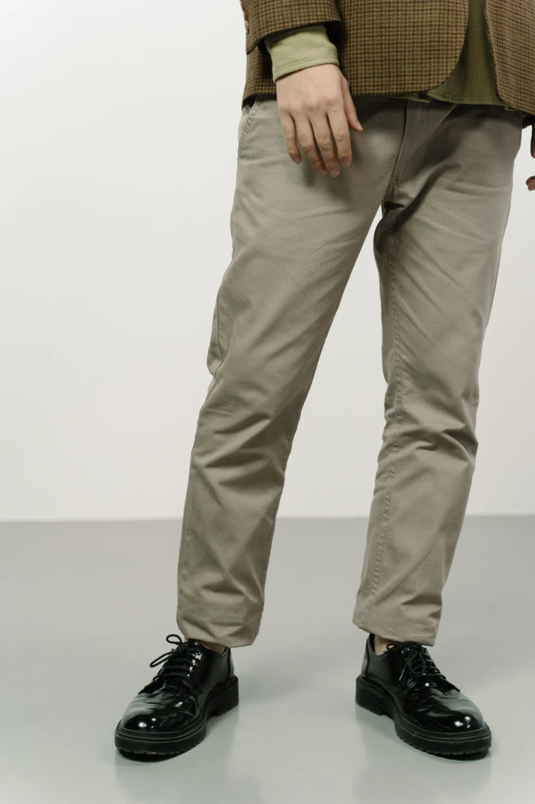
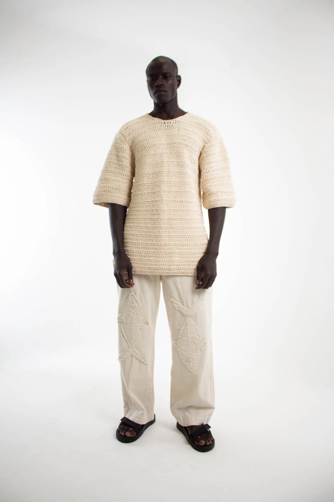

01 / CHOOSE
Start with a style
Pick the piece that works for your day and tell us how you like clothes to sit.
MADE FOR YOUR EVERYDAY
Easy pieces for work, weekends, changing weather and the plans in between—with fit support when you need it.
SHOP BY OCCASION
Start with where you are going, then make the look your own.
SHOP BY CLOTHING TYPE
Four useful starting points, from the first layer to the finishing one.

02 / EASY SHAPESTrousersRelaxed and tailored proportions for everyday wear.Explore styles ↗
03 / ONE-STEP DRESSINGDresses & SetsComplete looks that make getting dressed simpler.Explore styles ↗ 04 / FINISHING LAYERSJackets & KnitwearSoft structure and warmth when the weather shifts.Explore styles ↗LATEST ARRIVALS
THE SALE EDIT
DRESS FOR THE WEATHER
Simple edits built around comfort, temperature and the way your day moves.
PERSONAL FIT
Pick the piece that works for your day and tell us how you like clothes to sit.
Share your usual size and any length, sleeve or proportion preferences.
We will confirm what is possible and arrange a fitting or collection.
SEASONAL LOOKBOOK
Three compact outfit stories move from the working week to slower plans and dinner after dark.
Open the lookbook ↗NOT SURE WHERE TO START?